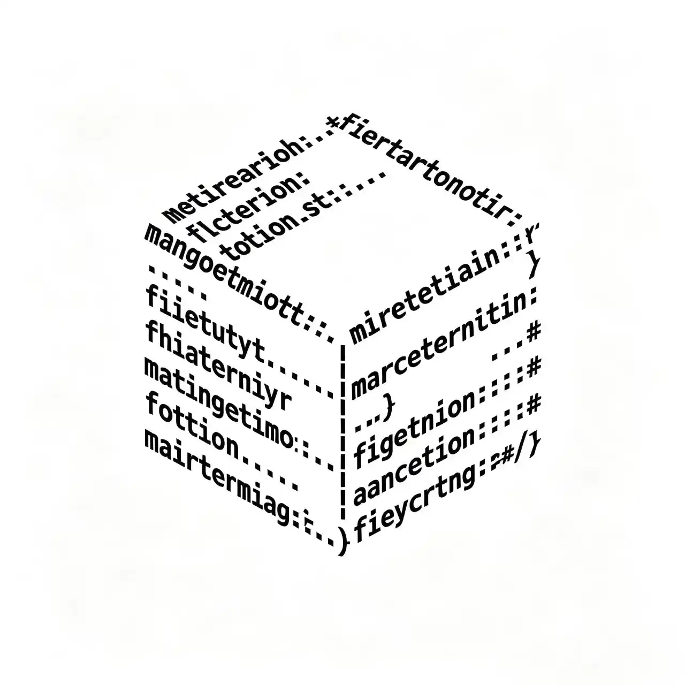

关于我们
以实用、精简、开放为核心理念。所有项目均遵循 GPL‑3.0 协议开源，在 Gitee 与 GitHub 上同步维护。我们欢迎新开发者加入
维护项目
CleanSlate (白板)
基于 Python 的命令行 C 盘清理工具，绿色免安装。清理完成后，系统盘就像一块全新的白板。支持补丁系统，使用 yaml 配置文件
v1.0.5 正式版
查看产品发布页
CleanSlate.CsGUI
基于 C# & Python 的 CleanSlate 图形用户界面版本
开发中
核心成员
Bohh
创始人 & 核心开发架构设计、前后端开发、发布测试、代码审查
Xin_Rail
运维 & 测试 & 后端开发自动化构建、测试、项目宣传、部分后端开发

Cjx
后端开发后端开发、部分架构设计、版本发布
元
生态 & 运维模组生态、社区维护、项目宣传
动态与加入
当前正在做什么...
CleanSlate.CsGUI 开发中。官网暂提供仓库入口，可通过 Gitee/GitHub 官方组织页前往查看
加入我们
团队无年龄限制，暂无薪资报酬，只要认同我们的开发准则即可参与 欢迎联系：nuln_studio0707@163.com